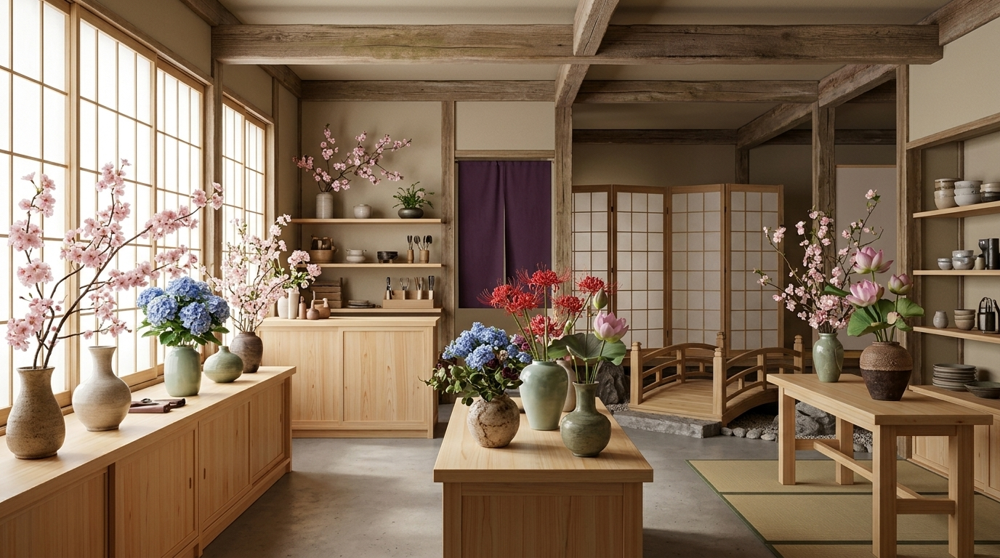

Bem-vindos à Hana no Yume
Descubra a beleza das flores asiáticas e conheça suas histórias, seus significados e os cuidados necessários para cultivá-las.

Descubra a beleza das flores asiáticas e conheça suas histórias, seus significados e os cuidados necessários para cultivá-las.
